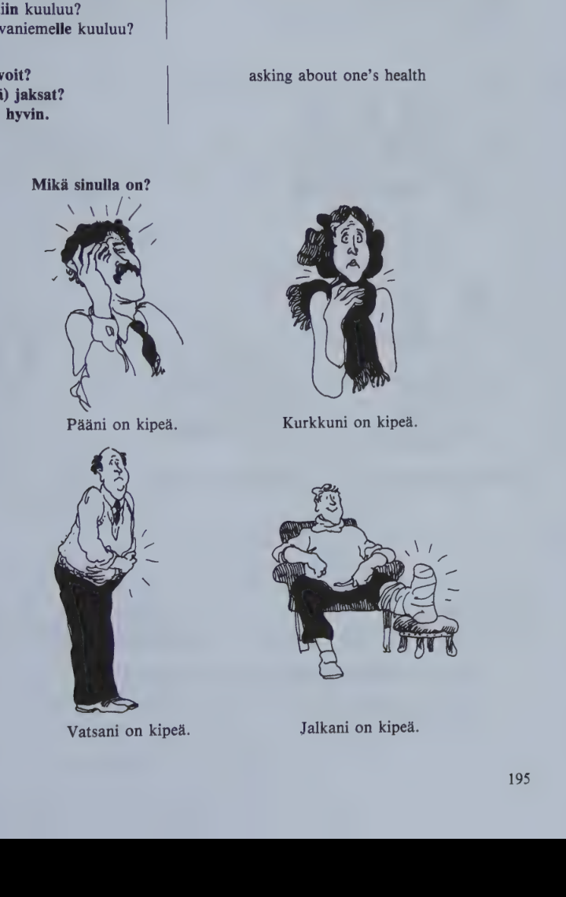
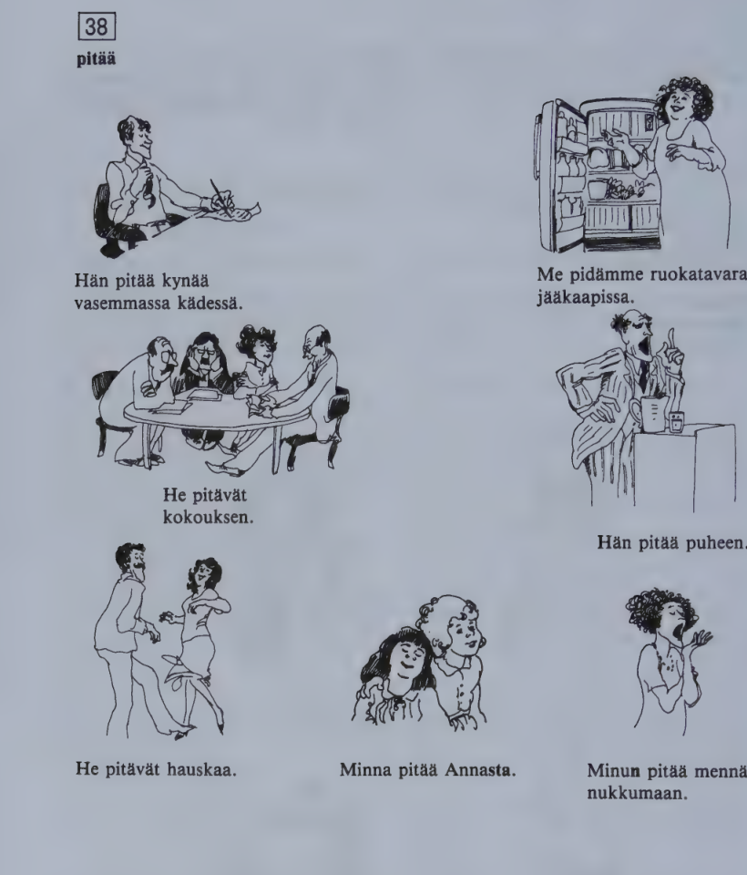

Kappale 38 / Lesson 38#
Mikko Laakso on sairaana / Mikko Laakso is ill#
Mikko tulee koulusta kotiin#
Suomi |
English |
|---|---|
1. M. Hei, aiti. |
1. M. Hi, Mommy. |
2. A. Hei Mikko. Oletko sina saanut nuhan? Sina naytat sairaalta. Miten sina voit? |
2. Mother. Hi, Mikko. Have you caught a cold? You look ill. How do you feel? |
3. M. Ihan hyvin. Mina olen vain vasynyt, siina kaikki. |
3. M. Just fine. I’m just tired, that’s all. |
4. A. Ainakin sinussa on kova nuha. Voi, ala kayta enaa tuota nenaliinaa, sehan on ihan likainen. Tassa on paketti paperinenaliinoja. Minun pitaa antaa sinulle heti laaketta. |
4. Mother. You have at least a bad cold. Oh dear, don’t use that handkerchief any more, it’s quite dirty. Here’s a packet of paper handkerchiefs. I must give you some medicine at once. |
5. M. Mutta yskanlaake maistuu niin pahalta. Sita paitsi se on lopussa. |
5. M. But the cough medicine tastes so bad. Besides, there isn’t any left. |
6. A. Onneksi mina ostin juuri apteekista uuden pullon. Sinun pitaisi ottaa myos pari C-vitamiinitablettia. Haenko kuumemittarin? |
6. Mother. Fortunately I just bought a new bottle at the pharmacy. You ought to take a couple of vitamin C pills, too. Shall I go and get the thermometer? |
7. M. En mina usko, etta minussa on kuumetta. |
7. M. I don’t believe I’m running any temperature. |
8. A. Mene kuitenkin heti sankyyn, ole kiltti. On hyva olla varovainen, nyt on kaikilla ihmisilla flunssaa. |
8. Mother. Anyway, go to bed at once, please. It’s good to be careful, everybody has got the flu now. |
Seuraavana aamuna rouva Laakson taytyy soittaa terveyskeskuksen laakarille.
Suomi |
English |
|---|---|
9. Rva L. Onko tohtori Kuusi? Taalla on rouva Laakso. Meidan Mikko-poika on sairaana. On, hanella on korkea kuume, melkein 40 astetta. Eilenko? Ei muuta kuin paha nuha. Nyt hanella on kova paansarky ja kurkku on kipea. Tyypillinen influenssa? Lepoa, aspiriinia ja paljon juotavaa … Enta tuo korkea kuume? |
9. Mrs. L. Dr. Kuusi? This is Mrs. Laakso calling. Our son Mikko is ill. Yes, he’s got a high temperature, nearly 40 degrees. Yesterday? Nothing but a bad cold. Now he’s got a bad headache and a sore throat. A typical influenza? Rest, aspirin, and a lot to drink … How about that high temperature? |
10. Toht. K. Pitaisi laskea parissa paivassa. Kylla, mina soitan, jos se ei ala laskea. Kiitos neuvoista, tohtori, mina olen jo paljon rauhallisempi. Kuulemiin! |
10. Dr. K. Ought to go down in a couple of days. Yes, I’ll call you if it doesn’t start going down. Thank you for your advice, doctor, I’m much calmer already. Goodbye, Dr. Kuusi! |
Mita (sinulle) kuuluu? asking about one's general news
Kiitos hyvAA, enta(s) sinulle?
Mita kotiin kuuluu?
Mita Rovaniemelle kuuluu?
Kuinka voit? asking about one's health
Miten(kA) jaksat?
Kiitos hyvin.

Kielioppia / Structural notes#
1. taytyy, pitaa, tarvitsee, on pakko#
Finnish |
English |
|---|---|
Taytyyko sinun lahtea jo? |
Must you go already? |
Ei minun tarvitse lahtea viela. |
I don’t have to go yet. |

Finnish |
English |
|---|---|
Han pitaa kynaa vasemmassa kadessa. |
He holds a pen in his left hand. |
Me pidamme ruokatavaraa jaakaapissa. |
We keep food in the refrigerator. |
He pitavat kokouksen. |
They are having a meeting. |
Han pitaa puheen. |
He is making a speech. |
He pitavat hauskaa. |
They are having fun. |
Minna pitaa Annasta. |
Minna likes Anna. |
Minun pitaa menna nukkumaan. |
I must go to bed. |
Finnish |
English |
|---|---|
Ihmisten pitaa syoda paljon hedelmia. |
People must eat a lot of fruit. |
He eivat saa syoda niin paljon sokeria. |
They must not eat so much sugar. |
Pekan taytyi menna tyohon, vaikka han oli sairaana. |
Pekka had to go to work although he was ill. |
Sinun pitaisi polttaa vahemman. |
You ought to smoke less. |
Kaikkien pitaa tehda velvollisuutensa. |
Everybody must do his duty. |
Meidan piti tavata neljalta. |
We were supposed to meet at four. |
Onko meidan pakko hyvaksyA nama ehdot? |
Do we have to accept these terms? |
With verbs denoting obligation to do something (taytya must, have to; pitaa shall, must, ought to, be supposed to; tarvita need to, be necessary to; olla pakko must, be compelled to):
the person who has to do something appears in the genitive;
the verb denoting obligation appears in the 3rd pers. sing.;
as with other auxiliaries, the other verb which completes their meaning appears in the basic form.
No genitive in impersonal sentences:
Finnish |
English |
|---|---|
Nyt taytyy lahtea. |
We must go now. |
Auto pitaa pesta. |
The car must be washed. |
Note also the “have” structure:
Finnish |
English |
|---|---|
Opettajalla taytyy olla karsivallisyytta. |
A teacher must have patience. |
Vanhemmilla pitaisi olla aikaa lapsilleen. |
Parents should have time for their children. |
The direct object in taytyy sentences: basic form instead of the genitive.
Finnish |
English |
|---|---|
Han tekee tyon (tyota). |
He’ll do the job (some work). |
Hanen pitaa tehda tyo (tyota). |
He must do the job (some work). |
Note: En tarvitse rahaa.
tarvita in the meaning “to need something” is a normal verb conjugated in different persons.
2. The essive case#
Finnish |
English |
|---|---|
Mikko on sairaa/na (sairas). |
Mikko is ill. |
Tulimme kotiin vasynei/na. |
We came home tired. |
Juotko kahvisi musta/na? |
Do you drink your coffee black? |
The essive case expresses a state, condition, or capacity which can be thought of as temporary, subject to change.
Especially with nouns, the essive often corresponds to the English expression “as something”:
Finnish |
English |
|---|---|
Liisa on oppaa/na (nom. opas) Oulussa. |
L. works as a guide in Oulu. |
Lapse/na olin kovin ujo. |
As a child I was very shy. |
The essive is also used in time expressions, especially of the days of the week and month and annual festivals:
Finnish |
English |
|---|---|
maanantai/na |
on Monday |
toise/na (kolmante/na) elokuu/ta |
(on) August 2nd (3rd) |
joulu/na |
at Christmas |
Structure:
Sing. sairas (sairaa/n) sairaa/na
Pl. (sairai/ta) sairai/na
Sing. parempi (paremma/n) parempa/na
Pl. (parempi/a) parempi/na
However, the essive always has strong grade.
Finnish |
English |
|---|---|
tama joulu -> ta/na joulu/na |
this Christmas |
se joulu -> si/na joulu/na |
that Christmas |
mika joulu? -> mi/na joulu/na? |
which Christmas? |
More about the essive case in Book 2.
3. About colloquial Finnish#
Standard Finnish, as taught in textbooks, is mainly used in the written language, in educated speech, and in rather formal situations. In informal everyday situations, however, Finnish speech differs a great deal from the standard. There are local dialects which are still widely used. A strong influence today is the colloquial Finnish spoken in the Helsinki area. As most foreigners coming to Finland stay in or near Helsinki, they might profit from learning about the most characteristic aspects of the “Helsinki dialect”. (There have been earlier references to some of them in certain structural notes as well as in the readers.)
Note the following points:
Final vowels, especially
-i, are frequently dropped:yks(i), anteeks(i), jos Pekka lahtis(i), mul(l)a on, mul(ta)The vowel
-i-is commonly dropped in unstressed diphthongs:puna(i)nen, sel-la(i)nen or semmo(i)nen such, kirjo(i)ttaa, sano(i), otta(i)s(i)Unstressed vowel combinations with
-a (a)become long vowels:hirveen nopee (= hirvean nopea), en haluu maitoo (= en halua maitoa), paljon poikii (= poikia)The final
-tis dropped in participles:posti on tullu(t), bussi ei lahteny(t)-maa (-maa)is dropped intekemaanetc.:menna nukkuun (= nukkumaan), lahtee hiihtaan (= lahtee hiihtamaan)Poss. suffixes are commonly dropped:
m(in)un kirja(ni), s(in)un koti(si), tei-dan nimiShort quick-speech forms or dialect variants of certain words abound:
onk(o)s ta(m)mo, eik(o)s nii(n), kat(s)o, oon (= olen), tuut (= tulet), mee (= mene), tiian (= tiedan), m(in)a, m(in)usta, s(in)ulle, t(u)on, noi (= nuo), mei(d)an, kah(d)eksanseandnefrequently replacehanandhe:se sano(i), anna niille (= heille), sen kanssa (= hanen kanssaan)The verb is used in the sing. also in the 3rd pers. pl.:
tytot nauraa (= nauravat), ne lahti (= ne lahtivat), lapset on syony (= ovat syoneet)me tehdaanlargely replacesme teemme:me lahdetaan pois, me ei jaada tanne
The colloquial present tense of the verb olla is conjugated as follows:
ma oon me ollaan
sa oot te ootte
se on ne on
Sanasto / Vocabulary#
Finnish |
English |
|---|---|
+apteekki-a apteekin apteekkeja |
chemist’s, pharmacy, drugstore |
+kiltti-a kiltin kiltteja |
well-behaved, good, nice |
kipea-(t)a-n kipeita |
ill, sick; sore |
kuitenkin (neg. ei kuitenkaan) |
however, still, yet, nevertheless |
+kurkku-a kurkun kurkkuja |
throat; cucumber |
kuume-tta-en-ita |
fever, temperature |
kuume/mittari-a-n-mittareita |
(clinical) thermometer |
lampo/mittari |
thermometer |
laske/a-n laski laskenut |
go down; put down; count; reckon, calculate |
+lepo-a levon lepoja |
rest |
lika/i/nen-sta-sen-sia (# puhdas) |
dirty, soiled |
+laake-tta laakkeen laakkeita |
medicine, drug |
maistu/a-n-i-nut (joltakin) |
to taste (like something) |
nena/liina-a-n-liinoja |
handkerchief (“nose-cloth”) |
nuha-a-n nuhia |
cold (in the nose) |
+naytta/a naytan naytti nayttanyt |
(also:) to look, seem (like something) |
onneksi (# valitettavasti) |
fortunately |
+pita/a pidan piti pitanyt |
(also:) to hold; to keep |
minun pitaa (cp. minun taytyy) |
I shall, I have to; I am supposed to |
+paan/sarky-a-saryn-sarkyja |
headache |
rauhalli/nen-sta-sen-sia |
peaceful, quiet |
sita paitsi |
besides, furthermore |
+tabletti-a tabletin tabletteja |
pill |
+terveys-yyden |
health |
terveys/keskus |
health center |
usko/a-n-i-nut |
to believe |
Cp. Luulen, etta han on taalla. |
I think he’s here. |
En usko, etta han on taalla. |
I don’t think (believe) he’s here. |
+valitta/a valitan valitti valittanut |
to complain, regret |
varovai/nen-sta-sen-sia (+ varoma-ton) |
careful, cautious |
voi/da-n voi voinut |
(also:) to feel (well, ill) |
Kuinka sina voit? (cp. mita sinulle kuuluu?) |
how are you, how do you feel? |
yska-a-n (cp. yski/a) |
cough |
*
Finnish |
English |
|---|---|
jaksa/a-n jaksoi jaksanut (= voida) |
to have the strength; to feel (well, ill) |
+pita/a hauskaa |
to have a good time, enjoy oneself |
+taytta/a taytan taytti tayttanyt |
to fill, fulfill; complete |
han tayttaa 6 vuotta |
he’ll be 6 years old, turn six |
vatsa-a-n vatsoja |
stomach |